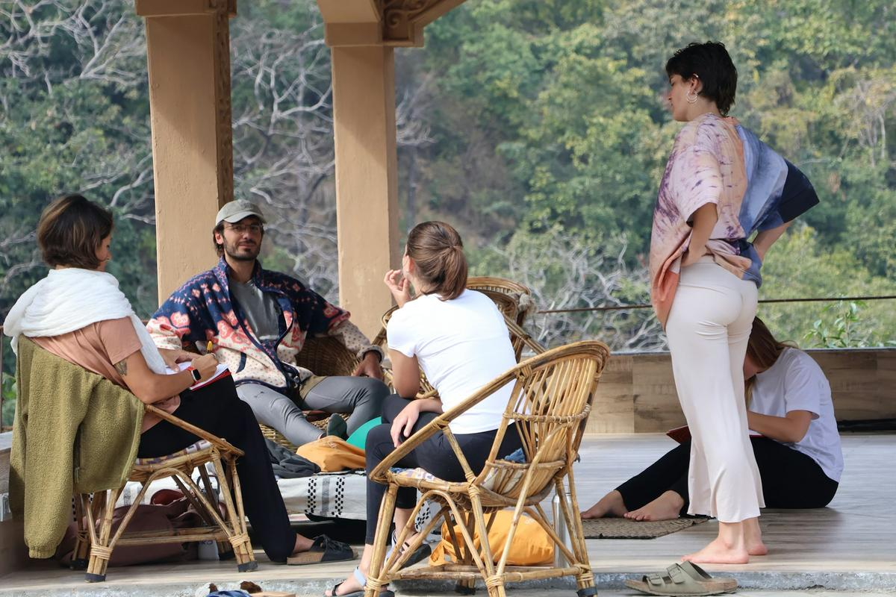
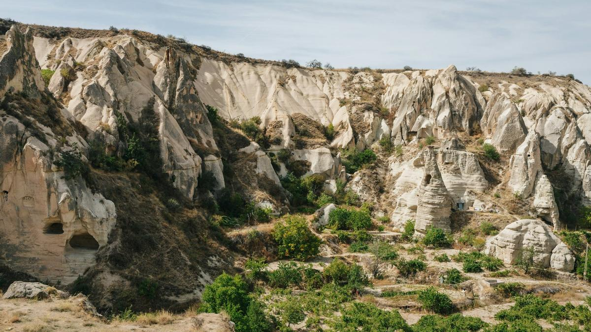

Porta la tua pratica
in viaggio.
Tu guidi il gruppo e noi pensiamo a tutto il resto: ti portiamo persone già iscritte, organizziamo il viaggio e ti paghiamo per ogni partenza.
Una rete di insegnanti, un solo modo di viaggiare
Le destinazioni e la struttura dei viaggi le disegniamo noi: itinerari, alloggi, guide locali, ritmo delle giornate. Tu porti il tema e la tua pratica. Così lo stesso deserto diventa un viaggio di astrologia, di yoga o di respiro, a seconda di chi lo guida.
Ti candidi
Compili il modulo qui sotto raccontandoci chi sei, che cosa pratichi e dove ti piacerebbe portare le persone.
Ci conosciamo
Facciamo una call per capire se siamo allineati sui valori e sul modo di stare con un gruppo.
Ti formiamo
Segui una formazione breve sul nostro metodo, in cui parliamo della struttura del viaggio, della sicurezza e della gestione del gruppo.
Parti
Scegli le partenze in base alle tue disponibilità, e noi pubblichiamo il viaggio con il tuo nome e il tuo tema.
Perché viaggiare con noi
Persone già iscritte
Promuoviamo ogni partenza e gestiamo iscrizioni e pagamenti, quindi non devi riempire il gruppo da solo.
Zero organizzazione
Alloggi, trasporti, pasti, guide locali e assicurazione sono già organizzati, così tu puoi occuparti soltanto del gruppo.
Un compenso per ogni viaggio
Un compenso fisso per ogni partenza, con viaggio e soggiorno inclusi, più un bonus per ogni partecipante che arriva dalla tua community.
Visibilità
Avrai un profilo sul sito, i tuoi viaggi in homepage e contenuti professionali da ogni partenza.
Una comunità di colleghi
Partecipi a incontri e momenti di formazione continua, e ti confronti con gli altri insegnanti del network.
Bonus eccellenza
Dopo ogni viaggio i partecipanti ti valutano, e se tutti ti danno 5 su 5 ricevi un bonus extra.
Un'area riservata
Hai in un unico posto le tue partenze, i partecipanti, le disponibilità, i compensi e il tuo link personale.
Hai un luogo nel cuore? Costruiamolo insieme.
Se conosci bene una destinazione che non facciamo ancora, proponila. La progettiamo insieme, tu guidi le prime partenze e ricevi una percentuale su tutte le partenze future di quella destinazione, anche quando la guidano altri insegnanti.
- Tu porti il luogo, i contatti locali e la visione
- Noi portiamo progettazione, logistica, prezzi e vendita
- Il viaggio entra nel catalogo con il tuo nome come co-creatore

Chi cerchiamo
Esperienza e cura
- Almeno 2 anni di esperienza nel guidare gruppi
- Un approccio trauma-aware e rispettoso dei limiti di ognuno
- Voglia di viaggiare in modo semplice e vero
Impegno reciproco
- Rispettare la struttura base del viaggio e i nostri standard
- Almeno 2 partenze all'anno
- Partecipare alla formazione iniziale
FAQ
Devo portare io i partecipanti?
No, perché le partenze le promuoviamo noi. Se però porti persone dalla tua community, ricevi un bonus per ognuna di loro.
Come vengo pagato?
Un compenso fisso per ogni partenza, concordato prima della pubblicazione del viaggio, più i bonus. Viaggio, vitto e alloggio sono a carico nostro.
Posso lavorare con i partecipanti dopo il viaggio?
Sì, in modo trasparente: per un periodo definito nel contratto riconosci al network una percentuale su quello che nasce dai partecipanti arrivati tramite noi.
Posso proporre una destinazione nuova?
Sì, con il programma di co-creazione. Se il progetto parte, ricevi una percentuale sulle partenze future.
Come funzionano i feedback?
Alla fine di ogni viaggio i partecipanti valutano l'insegnante in forma anonima. Le valutazioni sono visibili sul tuo profilo. Con 5 su 5 da tutto il gruppo ricevi il bonus eccellenza; sotto le 4,5 stelle di media ci fermiamo a parlarne insieme.
Quanto dura la selezione?
Di solito tre o quattro settimane, dalla candidatura alla prima partenza assegnata.
Raccontaci chi sei
Ci vogliono circa dieci minuti. Leggiamo ogni candidatura e rispondiamo entro due settimane.
Candidatura ricevuta
Grazie! Leggiamo con attenzione ogni candidatura e ti rispondiamo entro due settimane.